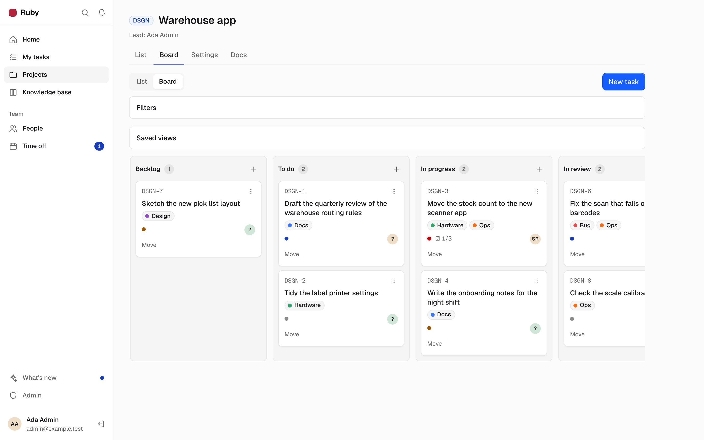
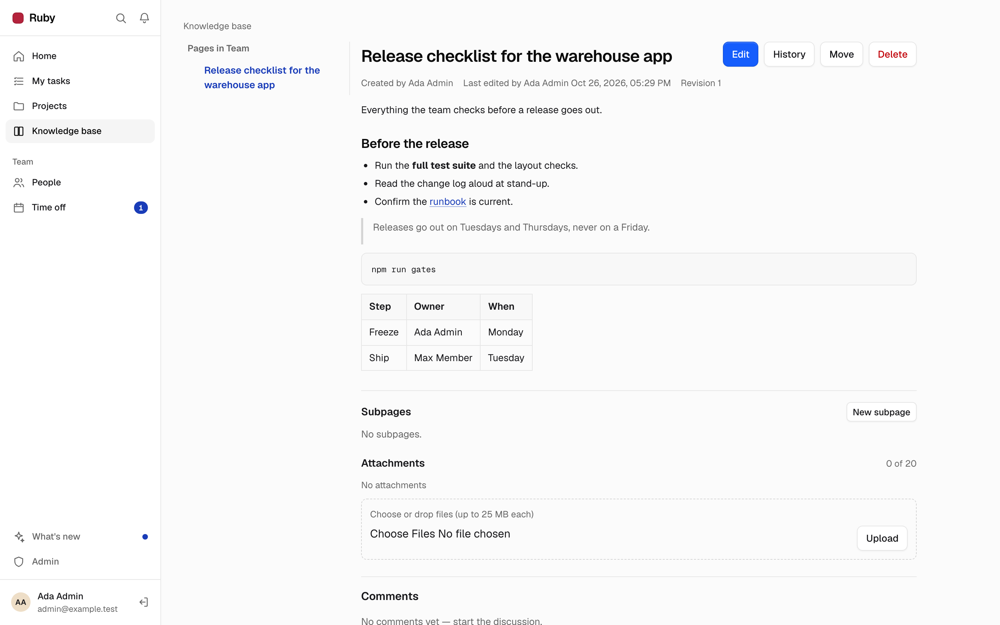
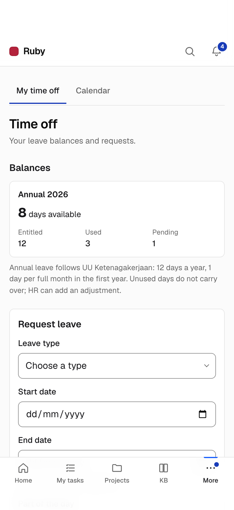
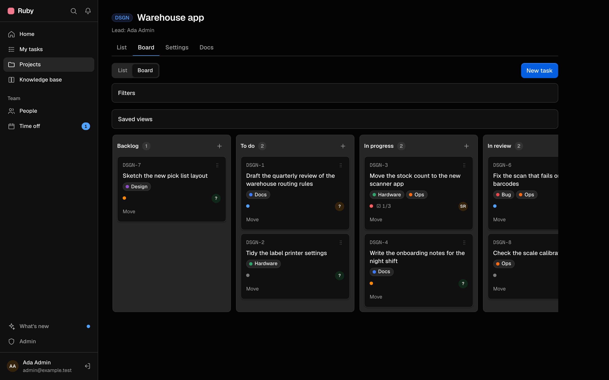

A list and a board for every project. Labels, checklists, milestones, column limits, saved views and bulk edit.

Markdown pages in a tree, revisions you can restore, and one search box for pages and tasks.

Mention a colleague and they get a notification.
Files up to 25 MB on tasks and pages, for signed-in people only.
A directory and an org chart. ID numbers, bank details and salary are encrypted, and every reveal is logged.
•••• •••• ••••Reveal
Bank account number•••• ••••Reveal
SalaryRp ••••••Reveal
Requests in working days, approvals and a team calendar.

No public sign-up. An admin invites each person.
A What's new page, and a banner after each deploy. If you have unsaved input, Ruby asks before it reloads.

Usable from 360 px wide, with a tab bar on phones.